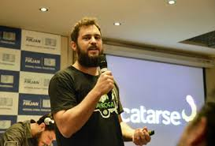

Inscreva o seu projeto para concorrer ao prêmio concedido pela sua participação efetiva no
Laboratório de Inovação Cidadã.
INSCRIÇÕES ATÉ 17/03/2024
PARA COLABORADORES
Inscreva-se como colaborador e participe de todos os encontros e mentorias. Os colaboradores
auxiliam no desenvolvimento dos projetos e participam todas as sextas-feiras das 14h às 18h
e,
caso
finalizem o laboratório com êxito, recebem um certificado de 100h de extensão.
INSCRIÇÕES AINDA SEM DATA CONFIRMADA
PROGRAMAÇÃO
EM BREVE
AO VIVO
Confira abaixo a playlist completa da última edição: LABIC 2023
O PROJETO
LABORATÓRIO DE
INOVAÇÃO CIDADÃ
O Laboratório de Inovação Cidadã da UFRJ é uma rede de ações, pesquisa e formação com
objetivo de mapear e sistematizar experiências de referência em tecnologias sociais e
inovação no estado do Rio de Janeiro. São espaços criados para desenvolver, apoiar e
acelerar propostas que surgem e têm potencial para serem replicadas ou ativar outras
iniciativas.
MATCH DA INOVAÇÃO
Chamamos de “Match da Inovação” porque aproxima projetos e experiências da cidade com quem
pode ajudar a concretizá-los ou melhorá-los.
porque aproxima projetos e experiências da cidade com quem pode ajudar a concretizá-lo ou
melhorá-los.
A iniciativa é realizada pelo Pontão de Cultura Digital da Escola de Comunicação da UFRJ,
coordenado pela professora Ivana Bentes desde 2017. O Labic já foi realizado no Rio de
Janeiro (2017, 2018, 2019), em Salvador/BA (2019) e Lisboa/PT (2019). Desde 2020, realizamos
edições virtuais e híbridas.
O Laboratório de Inovação Cidadã conta com o apoio da FAPERJ, através da Bolsa Cientista do
Nosso Estado, e do CNPQ.
Os Laboratórios de Inovação Cidadã, os LABICS, são baseados numa metodologia que valoriza a
formação de equipes de trabalho multidisciplinares interessadas em participar e colaborar
com a produção e difusão de protótipos, produtos e serviços que apontem soluções para
questões desafiadoras e concretas de cidades e/ou territórios
Os LABICS sistematizam, desenvolvem, apoiam e aceleram propostas com potencial para serem
replicadas ou que possam ativar outras ações, pesquisas e iniciativas.
O PROJETO
INOVAÇÃO CIDADÃ
O PROJETO
EIXOS TEMÁTICOS
Mídias, Ações Virtuais e Diversidade
Projetos, ações, aplicativos e tecnologias que apresentem iniciativas de comunicação em
qualquer suporte e linguagem e que estimulem a diversidade de conteúdos e de produtos
de mídias.
Tecnologias, Redes, Dados e Plataformas
Iniciativas de desenvolvimento de plataformas, redes, aplicativos, programas, tecnologias
abertas. Projetos de mineração, análise e visualização de dados.
Formação
Projetos, propostas, metodologias que proponham novas perspectivas em educação, inovação
e formação utilizando qualquer linguagem. Como por exemplo: educação inclusiva, formação
em rede, livre, de agentes e multiplicadores, formação para a diversidade etc.
Economia e Cidadania
Iniciativas em novas economias, sustentabilidade, financiamento colaborativo,
empreendedorismo social, redes de proteção, inclusão, visibilidade, ampliação de
direitos para a diversidade cultural, de gênero, religiosa, étnica etc.
Ações de enfrentamento a covid-19
Propostas de todos os campos de conhecimento, em especial, da saúde, comunicação,
cultura, educação, que envolvam a constituição de redes de apoio e solidariedade
pós-pandemia.
Outros temas
A diversidade temática do LABIC é vasta e cheia de pluralidade.
O PROJETO
LABORATÓRIOS NO MUNDO
O Laboratório de Inovação Cidadã é um projeto da Secretaria-Geral Ibero-americana que tem
como objetivo promover a inovação cidadã a fim de fomentar a transformação social, a
governança democrática, e o desenvolvimento social, cultural e econômico. Inovação
Cidadã é um processo que resolve problemas sociais com tecnologias (digitais, sociais,
ancestrais) e metodologias inovadoras, através do envolvimento da própria comunidade
afetada. Com isso, os cidadãos deixam de ser receptores passivos de ações institucionais
e se convertem em protagonistas e produtores de suas próprias soluções.
PARCEIROS
CONHEÇA ALGUNS DE NOSSOS PARCEIROS
ADRIANO BELISÁRIO
É coordenador da Escola de Dados na Open Knowledge Brasil e pesquisador do MediaLab UFRJ.
PRETO ZEZÉ
É presidente da Central Única das Favelas (CUFA) e sua primeira mentoria no LABIC foi em
2021. Preto Zezé também é CEO e fundador do Laboratório de Inovação Social, onde trabalha
questões próximas às do LABIC. Além disso, ele é empresário, produtor musical e repórter.
RAUL SANTIAGO
É uma das principais lideranças de favelas em nosso país. Fundador da Agência BRECHA e do
Coletivo Papo Reto, é integrante de iniciativas e plataformas que versam sobre periferia,
direitos humanos, juventude e desenvolvimento sustentável nas favelas.
RENE SILVA
É uma das principais lideranças de favelas em nosso país. Ele é fundador do jornal
comunitário Voz das Comunidades, da Agência BRECHA e do Coletivo Papo Reto, é integrante de
iniciativas e plataformas que versam sobre periferia, direitos humanos, juventude e
desenvolvimento sustentável nas favelas.
MARCUS FAUSTINI
É criador da metodologia da Agência de Redes para Juventudes, que potencializa jovens de
favelas e periferias a transformarem ideias em projetos de intervenção em seus territórios.
FLÁVIA MACÊDO
É escritora, empreendedora social, vice-presidente do Educar+ (@projeto.educar.mais) e
construtora de comunidade da Rede Muda Outras Economias (@mudaoutraseconomias).
FELIPE ALTENFELDER
Gestor da Mídia NINJA e do Fora do Eixo, é articulador do projeto S.O.M - Sistema Operacional
da Música (plataforma de conteúdo e aceleração de oportunidades) e da plataforma 342 de
ativismo.
THIAGO SCHERER
É fundador do Design Ativista (@designativista) e gestor da frente de design da Mídia NINJA e
do coletivo Fora do Eixo (@foradoeixo).
DANIELE MOURA
Jornalista premiada e apaixonada por periferias e favelas do Brasil, é editora do Maré de
Notícias (@maredenoticias).

FELIPE CARUSO
Felipe Caruso é jornalista, consultor de crowdfunding e capacitor de fluxos. Foi coordenador
de comunicação do Catarse e repórter na Folha de S. Paulo.
BRUNO F. DUARTE
É cineasta, pesquisador, performer e ativista do movimento negro LGBT. É criador da CABINE -
Da galeria ao banheirão! , plataforma para a expansão de ideias sobre artistas negros/as
LGBT.
LUÍS OTÁVIO RIBEIRO
Um dos co-fundadores do Catarse, plataforma pioneira e uma das maiores referências em
financiamento coletivo no Brasil.
AYRA CONSULTORIA
É uma empresa júnior de Gestão de Negócios vinculada à UFRJ. Em 18 anos de mercado, recebeu
mais de 20 prêmios por entregar soluções personalizadas para negócios e/ou projetos.
DRÍADE AGUIAR
É co-fundadora e editora do Mídia NINJA, ativista do Fora do Eixo, feminista negra e
militante body positive. Ela compartilhou com o LABIC alguns segredos da gestão e do
monitoramento das redes sociais para a produção de conteúdo e disputa de narrativas.
OLIVER KORNBLIHTT
Fotógrafo, ativista e editor da Mídia NINJA. Integra o coletivo Fora do Eixo e é gestor da
frente “Projeto” da NINJA.
RAÍSSA GALVÃO
Fundadora e coordenadora nacional da Mídia NINJA. Além disso, ela é editora das redes sociais
e também das editorias de opinião e meio ambiente.
LORI REGATTIERI
Lori Regattieri é cientista de dados, co-editora da revista DR e pesquisadora na ECO/UFRJ.
THIAGO VINÍCIUS
Fundador da Agência Popular Solano Trindade, é empreendedor social e liderança comunitária
que propõe tecnologias sociais que colaboram para geração de renda através de startups
focadas em desenvolver serviços e produtos que dialoguem com a qualidade de vida do morador
da favela.
JOAQUIM MELO
Empreendedor social, ele desenvolveu o conceito de “socioeconomia solidária” ao criar, em
1998, o Banco Palmas (@bancopalmas) no Conjunto Palmeira, um bairro popular de Fortaleza
(CE).
Marcelle Chagas
É coordenadora do curso Cidadania & Comunicação, juntamente com Ivana Bentes (ECO/UFRJ). O
curso coloca em debate temas relacionados à intersecção entre cidadania, comunicação,
diversidade e equidade na era pós-cultura digital. Ela é fundadora e coordenadora da Rede de
Jornalistas Pretos pela Diversidade na Comunicação (Rede JP) que tem como propósito reforçar
a importância da participação de jornalistas negros no mercado da comunicação no Brasil e no
mundo.
EDIÇÕES ANTERIORES
CONHEÇA AS EDIÇÕES ANTERIORES DO LABIC
LABIC 2023
AÇÕES TRANSFORMADORAS
EDIÇÃO 2023
O LABIC 2023 teve como objetivo ajudar ações de coletivos e organizações de todo o estado
do Rio de Janeiro com ações em 5 Eixos: Mídia, Diversidade e Combate à Desinformação;
Tecnologias, Redes, Dados e Plataformas; Formação; Economia e Cidadania; Outros Temas.
Nesta edição, o Laboratório foi voltado exclusivamente para projetos atuantes no Estado
do Rio de Janeiro.
Essa edição do LABIC teve como foco impulsionar iniciativas em sete eixos abrangentes,
como Ações de Enfrentamento à Covid-19 e Campos Afins, Mídias e Diversidade,
Tecnologias, Redes, Dados e Plataformas, Ações Culturais, Formação Livre, Economia e
Cidadania e Outros Temas.
Após 5 anos, 7 edições e mais de 180 projetos atendidos, o Laboratório de Inovação Cidadã
abriu uma chamada em setembro de 2021 para saber como estavam as iniciativas que fizeram
parte do LABIC UFRJ. Quinze desses projetos, pelo menos um de cada edição, retornaram e
tiveram a oportunidade de participar de novos encontros, criar novas redes e encontrar
novas parcerias e apoios. Durante oito encontros, foram realizadas mentorias específicas
direcionadas para cada um dos selecionados. Trocamos conhecimento em diversas áreas,
como design e comunicação visual; criação e envio de newsletter; elaboração de projetos
e captação de recursos; gestão de mídias e redes sociais; operação de plataformas de
streaming e transmissão ao vivo; e narrativas. Todo esse material está disponível no
Youtube do Pontão através do LABIC Sob Demanda, que reúne conversas com nossos mentores
e mentorias práticas em uma só playlist!
A urgência de vida trazida pela pandemia, sentida de forma ainda mais profunda nas
periferias, nos fez testemunhar que as respostas mais inovadoras de enfrentamento à
Covid-19 e suas consequências foram desenvolvidas justamente nesses territórios. O LABIC
Territórios, realizado no primeiro semestre de 2021, olhou para essas iniciativas,
buscou intensificar a troca de experiências entre realizadores, possibilitou a
colaboração de universitários, especialistas, professores, consultores, gestores, numa
verdadeira profusão de troca de conhecimentos, saberes, tecnologias, metodologias,
criatividade e inovação.
O LABIC Territórios teve apoio do Pontão de Cultura Digital da Escola de Comunicação da
UFRJ, da Pró-Reitoria de Extensão da UFRJ, da Fundação Universitária José Bonifácio, da
FAPERJ e do CNPq.
2020 trouxe a pandemia do coronavírus, acarretando mudanças na vida da maioria das
pessoas. Foram tempos de ruas desertas, escolas e universidades fechadas, afastamento
sanitário. Nosso desafio era produzir um LABIC totalmente virtual. oferecendo respostas
- vindas de dentro - a essa crise mundial. Formamos uma equipe de 13 pessoas para
atender 40 projetos e gerir 325 colaboradores de todo o Brasil. De 11 de setembro a 11
de dezembro de 2020, produzimos 13 encontros e reunimos projetos, colaboradores e
mentores às sextas-feiras, das 14h às 19h, em ambiente virtual. Os encontros foram
divididos em conferências, mentorias, oficinas, aconselhamento e consultorias
específicas, além de espaços de troca de expertises entre os grupos e projetos, mesmo
num ambiente virtual.
2019 foi um ano intenso. Além da edição anual, realizamos outras duas edições do LABIC em
formato reduzido, duas visitas técnicas e um ciclo de formação em análise de dados.
Uma das visitas foi ao Laboratório de Estudos sobre Imagem e Cibercultura (LABIC) da
Universidade Federal do Espírito Santo (UFES) é academicamente um dos expoentes
brasileiros da Ciência de Dados, tendo se tornado, ao longo dos anos, um dos mais
respeitados centros de referência no assunto.
A segunda, foi à sexta edição do Simpósio Internacional LAVITS: Assimetrias e
(In)Visibilidades: Vigilância, Gênero e Raça, corrida em junho, na Universidade Federal
da Bahia (UFBA). No evento, testamos a aplicação de uma metodologia de ativação de redes
em curtíssimo tempo, mapeamos redes parceiras em outros estados, expandindo nossa
incidência e relevância.
Foram 25 projetos atendidos por 11 mentores e 5 conferencistas que abordaram temas como:
redes e narrativas; aplicativos e tecnologias do comum, economia colaborativa,
sustentabilidade, gestão e governança; articulação, mobilização, mídia e ativismo;
produção audiovisual; dados e algoritmos; dados e narrativas; construção de narrativas
para projetos e apresentações: ferramentas de gestão de projetos; além das mentorias de
redes sociais, design e construção de aplicativos.
Nossa consagrada edição regular anual do LABIC foi realizada de setembro a dezembro de
2019.
Reuniu projetos, colaboradores e mentores às sextas-feiras, das 16h30 às 20h30, na
Central de
Produção Multimídia da Escola de Comunicação da UFRJ (CPM/ECO). Selecionamos 25 projetos
que
foram atendidos por 70 colaboradores. Os temas das conferências foram: cultura de redes
e
inovação cidadá; gestão de redes e construção de narrativas; revolução dos dados: dados
abertos
e dados cidadãos; financiamento coletivo; narrativas, mídias e tecnologias de
mobilização;
vídeo, TV e documentários; gestão e planejamento de projetos; ferramentas de organização
de
equipes; dados abertos e narrativas; metodologias de intervenção social em territórios;
maratona
de mídias sociais e design; novas estratégias e linguagens políticas; maratona de
criação de
sites; dados e plataformas; articulação e mobilização; mídias sociais; audiovisual e
podcasting;
design; narrativas e formação.
Nosso ciclo formativo em fluxo seguiu para a cidade de Salvador (BA) durante o Simpósio
Internacional LAVITS: Assimetrias e (In)Visibilidades: Vigilância, Gênero e Raça,
ocorrido em junho, na Universidade Federal da Bahia (UFBA). No evento, testamos a
aplicação de uma metodologia de ativação de redes em curtíssimo tempo, mapeamos redes
parceiras em outros estados, expandindo nossa incidência e relevância. Foram 25 projetos
atendidos por 11 mentores e 5 conferencistas que abordaram temas como: redes e
narrativas; aplicativos e tecnologias do comum, economia colaborativa, sustentabilidade,
gestão e governança; articulação, mobilização, mídia e ativismo; produção audiovisual;
dados e algoritmos; dados e narrativas; construção de narrativas para projetos e
apresentações; ferramentas de gestão de projetos; além das mentorias de redes sociais,
design e construção de aplicativos.
Em 2018, o LABIC foi desafiado a alcançar voos mais amplos. Com apoio da UFRJ, renovamos
e consolidamos o projeto e suas atividades, que já eram referência em cultura digital e
ambiente cognitivo de diversidade, produção e partilha de saberes e cosmovisões plurais.
A segunda edição do LABIC reuniu lideranças e gestores de projetos, pesquisadores,
mentores e colaboradores entre os meses de setembro e dezembro de 2018, no Rio de
Janeiro, conectando pessoas interessadas no intercâmbio de ideias e práticas pioneiras e
inovadoras da economia criativa. Vinte projetos participaram dessa edição e tiveram a
oportunidade de desenvolver suas propostas, compartilhar experiências, mapear as
melhorias necessárias e planejar seus próximos passos. Para isso, 58 colaboradores se
uniram aos projetos, contribuindo para seu desenvolvimento e sustentabilidade em rede.
O LABIC foi implementado na Escola de Comunicação da UFRJ em 2017. O laboratório incidiu
em toda a Região Metropolitana Fluminense. Teve LABIC no Pontão da ECO, na Central de
Produção Multimídia da ECO, no Território Inventivo (Centro), na Comunidade da
Maré/Redes da Maré, na Rede BOTAFOGO Solidária e na ANF -Agência de Notícias da Favela.
Além desses projetos e iniciativas que viraram parceiros, o LABIC contou com a
colaboração da Mídia NINJA, do Circuito Fora do Eixo, da Companhia Teatral Língua de
Trapo, da Encantamento Filmes e do Projeto Visionárias. Na primeira edição, o LABIC
realizou 13 encontros, aos sábados, das 14h às 18h. Para atender 27 projetos, reuniu 50
colaboradores voluntários, mentores e conferencistas, envolvendo diretamente 150
pessoas.
MENTORES, COLABORADORES E EXTENSIONISTAS SÃO FUNDAMENTAIS NO DESENVOLVIMENTO DOS PROJETOS.
CONHEÇA O QUE ELES FAZEM.
Mentores
São pensadores, gestores, ativistas, empreendedores, estudantes, professores, produtores,
desenvolvedores, comunicadores e investidores que apresentam diagnósticos, propostas e ações
inovadoras para os projetos.
Colaboradores
Os colaboradores participam das equipes dos projetos selecionados e da equipe de organização
do Laboratório de Inovação Cidadã para desenvolvimento, prototipagem, pesquisa aplicada,
sistematização, uso de tecnologias e ferramentas e documentação de processos ao longo do
laboratório.
Extensionistas
Extensionista é o aluno da UFRJ selecionado através de chamada específica para desenvolver
atividades com a comunidade externa utilizando o conhecimento adquirido na universidade e
participando ativamente das ações do LABIC. Por seu envolvimento, é creditado com horas de
extensão lançadas no seu BOA.